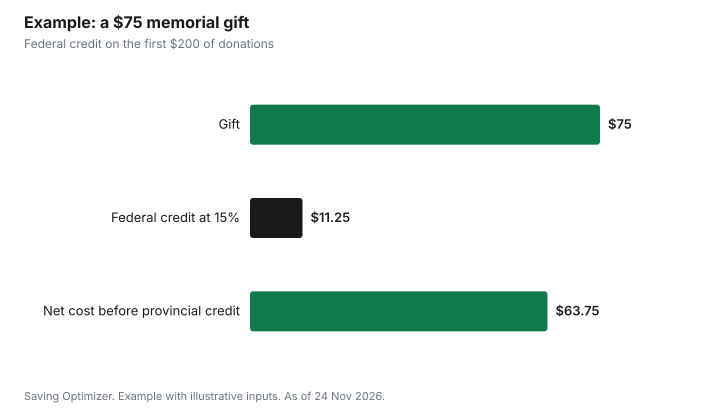

Events · Canada
Memorial Donations: A Canadian Cost Guide

When a family asks for donations instead of flowers, you give directly to the charity they name, and the official donation receipt is issued in your name, not the family's. The family can't claim your gift on the deceased's tax return. Most charities let you note that the gift is in memory of the person and will tell the family you gave. How much to give is personal; many people give about what flowers would cost.
Key takeaways
- The donor gets the receipt. Memorial gifts from friends can't be claimed by the family or the estate.
- Give through the charity named in the obituary and choose "in memory of" or "tribute" on the form.
- Check the charity on the CRA's list of charities before you give.
- Gifts made through a will, or by naming a charity as beneficiary of an RRSP, RRIF, TFSA or life insurance, can give the estate a tax credit.
- Example: a $75 memorial gift returns about $11 in federal credit to the donor, and more with the provincial credit.
Who gets the receipt
A registered charity issues an official donation receipt to the person who made the gift. If you give $50 in memory of a neighbour, the receipt is yours. The family usually gets an acknowledgement listing donors; amounts may be shared only if the charity's privacy practice and the donor allow it.
How much to give
- There's no standard amount. Many give what flowers would cost.
- Close friends and relatives sometimes give more.
- A group gift from a workplace or team can be larger and simpler; one person pays and others repay, but only the payer gets the receipt.
- A smaller gift is always fine.
Checking the charity
Search the CRA's List of charities for the charity's name and registration number before you give, especially if you're giving online through a link you received. Donate on the charity's own site or through the funeral home's donation link.
Gifts by will and the estate
If the deceased left gifts in their will, or named a charity as beneficiary of a registered plan or life insurance, the estate can claim the donation credit. These are different from memorial gifts from friends. The executor should ask an accountant about the best return to claim them on. See our funeral costs guide for other estate steps.
Plan: an example
You give $75 in memory of a colleague. The federal credit is 15% on the first $200 of your donations in the year, so $75 × 15% = $11.25. A provincial credit adds more. If your total donations for the year are above $200, the part above $200 earns 29% federally, or 33% if your income is in the top bracket. Our donation tax credit guide explains the details.

Sources
- Canada Revenue Agency, Charitable donation tax credit rates (15% on first $200; 29% or 33% above $200), checked 24 Nov 2026.
- Canada Revenue Agency, Gifts and income tax (P113) and donations made by will, checked 24 Nov 2026.
- Canada Revenue Agency, List of charities, checked 24 Nov 2026.
Frequently asked questions
Who gets the tax receipt for a memorial donation?
The person who made the gift. The family and the estate can't claim memorial gifts made by others.
How much should I give instead of flowers?
There's no standard amount. Many people give about what flowers would cost.
Will the family know I donated?
Most charities send the family a list of donors. Amounts may be shared only if the charity's practice and the donor allow it.
Can the estate claim donations?
Gifts made through the will, or by naming a charity as beneficiary of a registered plan or life insurance, can be claimed by the estate. Memorial gifts from friends can't.
How do I check that a charity is registered?
Search the CRA's List of charities for its name and registration number.
Researched and drafted with AI assistance and fact-checked against official Canadian sources. How we create content.
Note: Tax rules can change. Check the CRA or a tax professional for your situation. Education only.